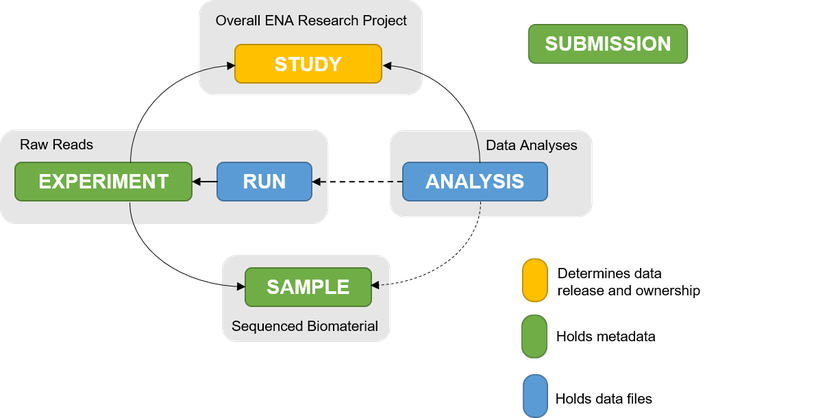
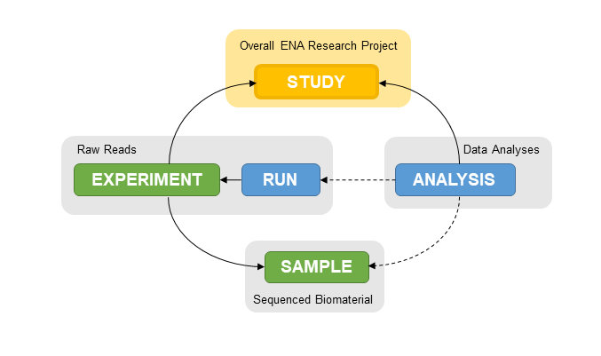
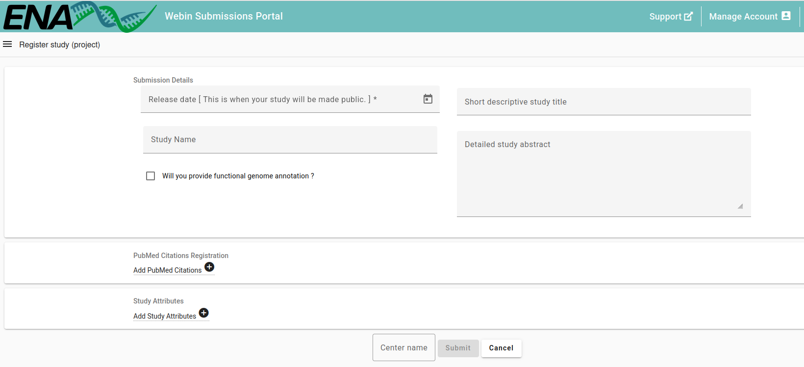
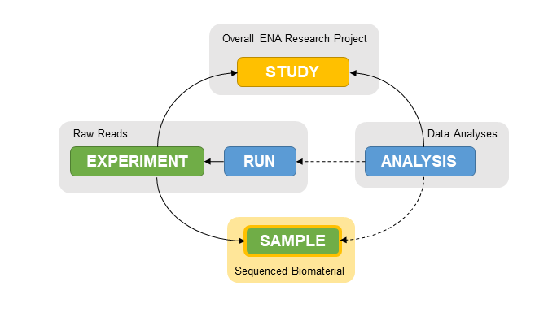
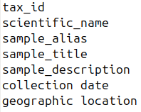
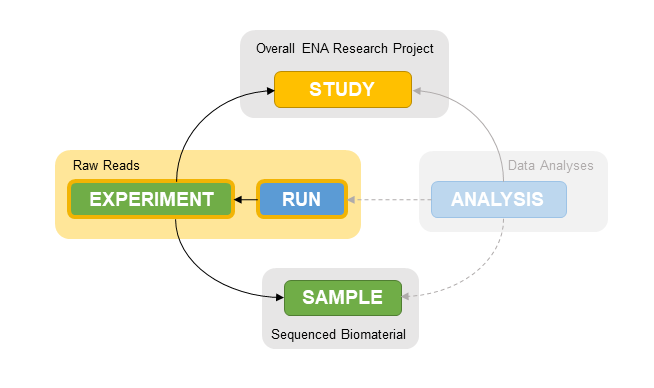
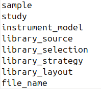
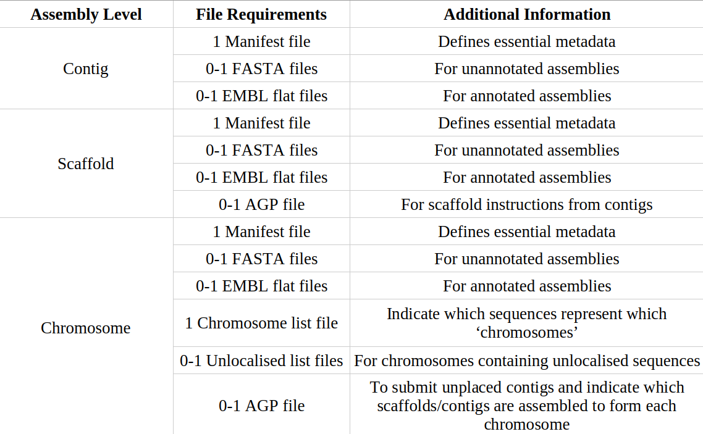
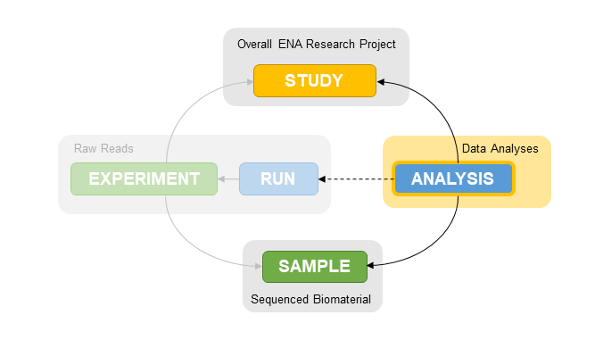

ENA (European Nucleotide Archive) is a european public repository that provides free and open access to raw and annotated DNA and RNA sequences, along with related experimental data and metadata. In SABio, we are official ENA brokers, which allow us to submit and manage studies from our ENA broker space.
Note: All our analysis projects include
for free the ENA upload of
raw and annotated data which will eventually become public.
If you want to upload your data to a different repository (GEO, ArrayExpress, etc.), ask for a customized upload project.
General overview of submission

Step 1: Register Study

First, the project information is registered. We provide a short study title, an abstract containing the general information about the project and the release date for public access (with a maximum of 2 years that, as brokers, we can extend as needed).
The locus tag prefix for the assembly is reserved when registering the study. It is user-defined, contains only alpha-numeric characters, at least 3 characters long and upper case, must start with a letter, and should not contain symbols.

A project ID will be associated with this information.
Step 2: Sample Creation
Each sample represents a unit of biomaterial, typically associated with a single collection event, which a sequencing library was produced from.

The metadata associated with each sample must include tax ID, scientific name, a sample title, alias and description, collection date and its geographic location.

Each sample will be associated with an unique sample ID.
Step 3: Reads upload
Reads files in compressed .fastq format are uploaded via command line to our ENA broker space. To assure correct upload, an md5 code for each file is generated and uploaded as well.
Step 4: Register reads
The previously uploaded reads are linked to their corresponding study ID and sample ID.

The metadata associated with each read file (single-end sequences) or pair of reads files (paired-end sequences) must include all relevant information about the library creation and sequencing platform.

Each read file or pair of files will be associated with two unique IDs: one for experiment (which holds metadata) and one for run (which holds data).
Step 5: Assembly files preparation
ENA recognises three assembly levels which describe the highest level of sequence within the assembly: contig, scaffold or chromosome. Depending on the level, the files needed for submission may differ:

The manifest file describes the assembly, including metadata and file names. It is a plain text file with two columns indicanting the field and its value.
For genomes, mandatory fields include: Study accession, Sample accession, Unique assembly name (previously reserved locus tag prefix), Assembly type, Estimated coverage, Assembly program and Sequencing platform/s.
Optional fields include a description of the genome assembly, a list of authors and address and the assembly-related run accessions, among others.
The flat file contains sequences and annotation in EMBL-Bank flat file format. It can be provided by user or generated by SABio analysts. EMBLmyGFF3 tool translates sequence and annotation files to a single flat file and provides warnings if any feature is not EMBL approved.
For chromosome level assemblies, the chromosome list file is also mandatory. It is a plain text file that includes, for each chromosome, the sequence name, chromosome name and type of chromosome. Additionally, a fourth column contaning chromosome location can be provided.
Step 6: Assembly upload
Within ENA, all assemblies are submitted as ‘analysis’ submission objects.

Assembly submission is performed via command line. First, a validation step is run and the manifest file, flat file and chromosome list file formats are checked. Then, the submission is performed and the analysis accession is immediately provided. Uploaded files are next revised by ENA, that will send a confirmation email containing the assembly and sequences accessions.